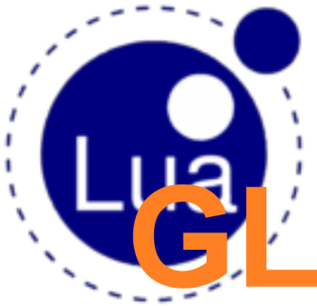

Lua-gl
Graphical library to handle the hard parts of creating software like electronic schematic editor/flowchart creator/mind maps/block diagrams in Lua with just a few lines of code.
Learn More

Graphical library to handle the hard parts of creating software like electronic schematic editor/flowchart creator/mind maps/block diagrams in Lua with just a few lines of code.
Learn MoreFirst why choose Lua? Lua is:
Lua-GL provides basic shapes which can be grouped to form complex shapes such as a PNP bipolar transistor symbol shown here in the demo application.
Lua-GL provides mechanisms to add ports. A port is any point which is sticky to connectors. Your application decides and controls how they look. The demo application here shows ports being added to objects.


Lua-GL provides mechanisms to add connectors. Your application decides how they look or route. The demo application shows one implementation of the connectors that is possible.
Lua-GL provides the mechanisms to drag objects/connectors. Dragging items maintains their connector interconnections. Your application decides how dragging behaves and looks. The demo application shows one implementation of dragging.

The demo application shows here an implementation of dragging the parts of a connector to reshape it.
Lua-GL comes with its own auto-router to find the shortest path for connector routing if your application decides to use it. Your application can add its own router with routing policies quite easily. The demo application here shows the autorouter in action.
First of all, you should have an IUP and CD library on your local system.
Download IUP from link
Download CD from link
Install lua-gl using luarocks
Some examples of using the library. Full details can be found in the documentation.
To use the module simply do
Creating a canvas object
cnvobj is an object of the IUP canvas. Canvas can be accessed by cnvobj like canvas = cnvobj.cnv and we can perform operations on canvas using cnvobj.
dlg = iup.dialog{ iup.vbox{ iup.label{title = "----------------Canvas---------------"}, cnvobj.cnv, }, title = "lua-gl", } dlg:showxy(iup.CENTER , iup.CENTER) if iup.MainLoopLevel() == 0 then iup.MainLoop() iup.Close() end